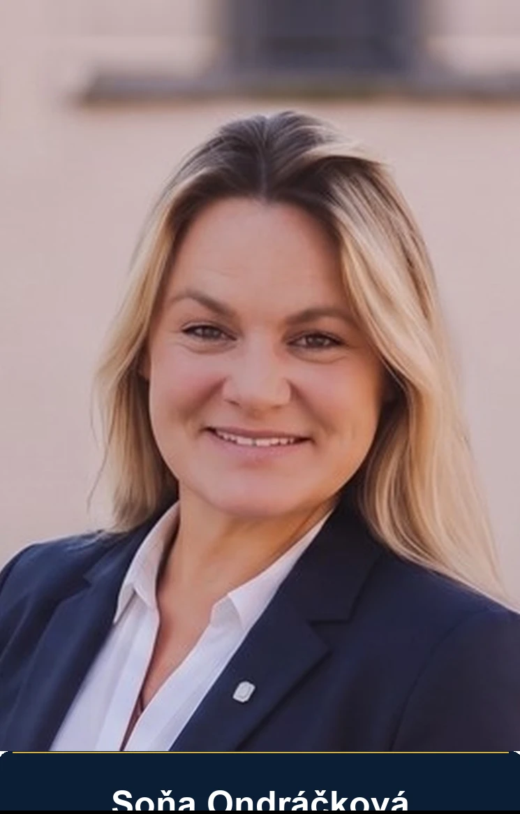
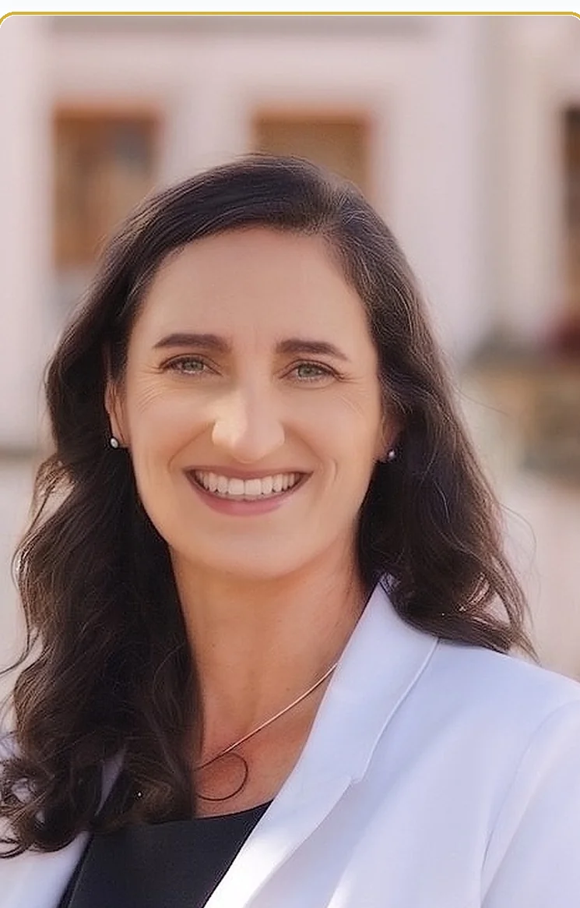
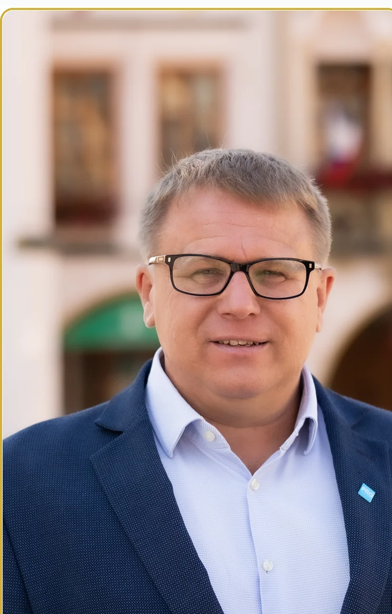
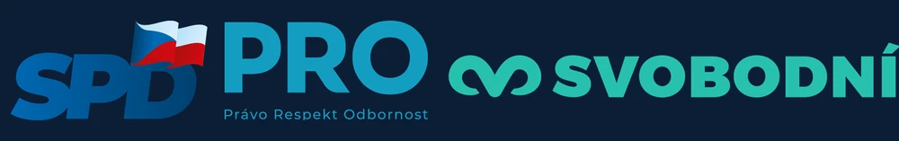

Co z Trutnova máte Vy?
MÁME JASNÝ PLÁN
Společně pro bezpečnější, čistší a prosperující Trutnov bez korupce a prázdných slibů.
Jsme Patrioti Trutnov – tým aktivních lidí, kteří zde žijí, pracují a chtějí skutečnou změnu ve vedení našeho města.
Patrioti Trutnov
Transparentně • Zodpovědně • Pro Trutnov
Město patří občanům
Konec rozhodování o nás bez nás. Zavedeme místní referenda o klíčových stavbách, otevřenou radnici a mobilní aplikaci pro hlášení závad.
Ochrana našeho domova
Chráníme čistou vodu z Pece, čistou horskou přírodu bez obřích větrníků a zajišťujeme bezpečné ulice i parky pro rodiny a děti.
Spravedlivé investice
Všech 13 okrajových částí Trutnova získá spravedlivý a garantovaný podíl z rozpočtu na kvalitní nové chodníky, dopravní obslužnost, občanskou vybavenost i úsporné vytápění veřejných prostor.
Kandidáti pro Trutnov
Lidé, kteří v Trutnově žijí a pracují. Známe každodenní problémy našeho města a máme jasná a realistická řešení.

Soňa Ondráčková
Zaměřuje se na podporu rodin s dětmi, podporu sportu a aktivního vyžití dětí i mládeže, rozvoj školství, dostupné bydlení a důstojnou péči pro naše seniory.

Mgr. Bc. Kateřina Hurdálková, DiS.
„Trutnov musí být bezpečným a čistým městem pro život našich dětí i spokojenost seniorů, nikoli soukromým revírem úzké skupiny lidí.“
Podnikatelka, sportovkyně a regionální politička. Dlouhodobě bojuje za ochranu podhůří Krkonoš před obřími větrnými elektrárnami, hospodaření města bez zákulisních kšeftů, podporu trutnovských rodin, rozvoj sportu a místní referenda. V bojových sportech se aktivně věnuje karate v klubu SKBU Trutnov, z. s., kde drží 1. KYU a působí jako trenérka a zkušební komisařka.

Václav Török
Dlouhodobě a neústupně bojuje za kvalitní krkonošskou pitnou vodu z Pece pod Sněžkou, odmítá její míchání s říční vodou a neúnosné zdražování vodného a stočného. Dále prosazuje bezpečnost v ulicích a spravedlivé investice do okrajových částí města.
Kompletní kandidátní listina (všech 33 kandidátů)
Kandidátní listina pro volby do zastupitelstva města Trutnov konané ve dnech 9. a 10. října 2026. Volební strana: PATRIOTI TRUTNOV s podporou PRO, SPD, Svobodných a nezávislých kandidátů.
| # | Jméno a příjmení | Věk | Povolání | Část obce | Příslušnost / Navržen |
|---|---|---|---|---|---|
| 1 | Mgr. Bc. Kateřina Hurdálková Lídr |
48 | OSVČ – majitelka čistírny | Vnitřní Město | PRO |
| 2 | Soňa Ondráčková |
46 | sociální pracovnice | Kryblice | SPD |
| 3 | Václav Török |
53 | ředitel chráněné dílny | Střední Předměstí | PRO |
| 4 | Ing. Jan Kytýr |
46 | OSVČ – programátor | Dolní Předměstí | Svobodní |
| 5 | Ing. Michal Karlík |
61 | projektant | Střední Předměstí | PRO |
| 6 | Luďka Tomešová |
57 | OSVČ – majitelka LT tiskárna | Kryblice | Nezávislý |
| 7 | Jiří Handžák |
72 | důchodce | Horní Staré Město | SPD |
| 8 | Zdeněk Hromádka |
50 | skladník | Kryblice | SPD |
| 9 | Jiří Mikyska |
52 | invalidní důchodce | Kryblice | PRO |
| 10 | Romana Petirová |
– | administrativní pracovnice | Dolní Předměstí | Nezávislý |
| 11 | Tomáš Patzelt |
41 | OSVČ – instalatér | Studenec | Nezávislý |
| 12 | Petr Nymsa |
54 | energetický expert, manažer | Kryblice | Nezávislý |
| 13 | Stanislava Volfová |
59 | referent kvality | Horní Staré Město | Nezávislý |
| 14 | Zografia Drahuská |
56 | pracovnice sociálních služeb | Horní Staré Město | SPD |
| 15 | Jakub Ondráček |
24 | kovoobráběč | Kryblice | Nezávislý |
| 16 | Ivan Roštejnský |
65 | důchodce | Kryblice | Nezávislý |
| 17 | Petr Bouslavský |
73 | důchodce | Střední Předměstí | PRO |
| 18 | Tomáš Novák |
52 | řidič mezinárodní dopravy | Poříčí | Nezávislý |
| 19 | Jan Chmelař |
46 | zaměstnanec bezpečnostní služby | Střední Předměstí | Nezávislý |
| 20 | Michal Šubrt |
40 | strážník – ostraha | Horní Předměstí | Nezávislý |
| 21 | Vlastimil Rozsypal |
66 | IT specialista | Kryblice | Nezávislý |
| 22 | Věra Mlézivová |
66 | OSVČ – pohřební služba Aura | Bojiště | Nezávislý |
| 23 | Šedík |
58 | strojník | Babí | Nezávislý |
| 24 | Vladimír Nekrasov |
73 | důchodce | Horní Staré Město | Nezávislý |
| 25 | Libuše Fišerová |
61 | OSVČ – cestovní ruch | Bohuslavice | Nezávislý |
| 26 | Pavla Oborníková |
76 | důchodce | Kryblice | Nezávislý |
| 27 | Jiří Burdych |
54 | kuchař | Poříčí | Nezávislý |
| 28 | Hana Čudová |
47 | zdravotní sestra | Kryblice | SPD |
| 29 | Aleš Kotek |
82 | důchodce | Kryblice | Nezávislý |
| 30 | Jiří Ondráček |
21 | kovoobráběč | Kryblice | Nezávislý |
| 31 | Tereza Gergely |
18 | student | Poříčí | Nezávislý |
| 32 | Adam Hurdálek |
18 | student | Vnitřní Město | Nezávislý |
| 33 | Mgr. Daniela Kytýrová |
49 | učitelka, speciální pedagog | Dolní Předměstí | Nezávislý |
10 klíčových priorit pro Trutnov
Máme jasný plán. Konkrétní řešení pro bezpečnější, čistší a prosperující Trutnov.
Větrné elektrárny do podhůří nepatří
Naše zdraví, klid a hodnota domů mají přednost před miliardovými zisky investorů. Zachováme čistou a neporušenou krkonošskou krajinu.
Kvalitní pitná voda – STOP vodě z řeky
Zvýšíme kapacitu čistírny v Peci a zmodernizujeme potrubí i úpravnu vod. Chceme pro všechny obyvatele čistou pramenitou vodu!
Bezpečný Trutnov bez drog a stříkaček
Zacílíme dohled policie na Jiráskovo náměstí a Poříčí, vyčistíme riziková místa i dětská hřiště od pohozených jehel a zavedeme nulovou toleranci drogám.
Město patří občanům, ne vedení města
Zavedeme místní referenda o zásadních investicích, mobilní aplikaci pro hlášení problémů a závad a otevřenou radnici pro všechny.
Víc pro děti, školy a mladé rodiny
Revitalizace hřišť, chytré altány s Wi-Fi a USB, koutky pro rodiče s dětmi i smysluplné volnočasové kluby a zázemí pro teenagery.
Dostupní lékaři, zubaři a péče v nemocnici
S krajem vyřešíme neutěšený stav nemocnice Trutnov a zajistíme efektivní motivační pobídky pro příchod nových lékařů a stomatologů.
Stop exekucím a dostupné městské byty
Konec kšeftů s městskými pozemky – podpoříme startovací byty pro mladé rodiny, odkup hotelu Patria a účinnou obranu lidí v nouzi.
Rozvoj 13 okrajových částí Trutnova
Pro Poříčí, Libeč, Babí, Voletiny, Studenec, Bohuslavice, Adamov, Nový i Starý Rokytník, Volanov, Oblanov, Střítež a Lhotu u Trutnova zajistíme: dopravní obslužnost a občanskou vybavenost, kvalitní nebo nové chodníky a úsporné vytápění veřejných prostor.
Živá kultura a nové zázemí Bojiště
Postavíme moderní hygienické zázemí na legendárním Bojišti, podpoříme místní kulturní a sportovní spolky a obnovu městských památek.
Ochrana zvířat a krásné přírody
Rozšíříme kapacitu městského psího útulku, zlepšíme péči o opuštěná zvířata a vytvoříme bezpečné, čisté prostředí pro ptactvo i lesní zvěř.
Akční plán priorit na radnici
Máme jasný plán. Náš volební program nejsou prázdné sliby – máme připravený časově rozfázovaný harmonogram konkrétních kroků od prvního dne po zvolení.
Okamžité audity & Otevřená radnice
- Hloubkový audit hospodaření: Prověříme všechny běžící městské smlouvy a zakázky, abychom okamžitě zastavili plýtvání veřejnými penězi.
- STOP větrníkům v podhůří: Zahájíme proces vyhlášení závazného místního referenda o zákazu stavby stovek metrů vysokých větrníků.
- Ochrana čisté vody z Pece: Právně prověříme vodárenské smlouvy a naplánujeme trvalou garanci dodávek vody z podzemních krkonošských pramenů.
Bezpečí v ulicích & Spravedlivé finance
- Hlídky městské policie v krizových oblastech: Zacílíme dohled pečlivé městské policie na skutečně problémová místa – především na Jiráskovo náměstí, do Poříčí a do rizikových lokalit s výskytem drog a pohozených injekčních stříkaček.
- Infrastruktura pro Trutnov & aplikace pro občany: Spustíme aplikaci pro rychlé hlášení výtluků i závad, zmodernizujeme veřejné osvětlení a prosadíme noční ztišení železničních přejezdů v obytných zónách města.
- Garantovaný fond pro 13 okrajových částí: Pevný podíl z rozpočtu pro Poříčí, Libeč, Babí, Voletiny, Studenec, Bohuslavice, Adamov, Nový i Starý Rokytník, Volanov, Oblanov, Střítež a Lhotu u Trutnova – na dopravní obslužnost a občanskou vybavenost, kvalitní nebo nové chodníky a úsporné vytápění veřejných prostor.
Dostupné bydlení, kultura & prosperita
- Startovací městské byty: Vybudujeme a zrekonstruujeme dostupné nájemní bydlení pro mladé rodiny, lékaře, zubaře a pedagogy.
- Modernizace areálu Bojiště: Celoročně důstojné a bezpečné zázemí pro hudební festivaly, trhy i sousedská komunitní setkání.
- Péče o přírodu a zvířata: Rozšíříme městský psí útulek, zlepšíme podmínky pro zvířata a ochráníme přírodní pásy před divokou výstavbou.
Přijďte si s námi popovídat
Zveme vás na osobní setkání na Krakonošově náměstí. Zeptejte se na vše, co vás o budoucnosti Trutnova zajímá.
Seznámení s kandidátem na senátora a s programem Patrioti Trutnov
Zveme všechny občany města Trutnova i okolních obcí na neformální setkání pod širým nebem. Představíme vám náš volební program pro Trutnov, kandidáta do Senátu i předsedu strany PRO. Těšíme se na vaše otázky, podněty a otevřený dialog.
Naše videa pro Trutnov
Sledujte naše vyjádření a reportáže k zásadním tématům našeho města. Pustit si je můžete přímo zde na stránce nebo na našem YouTube kanálu.
 🏞️ Libeč & Příroda
🏞️ Libeč & Příroda
Lom v Libči bude nadále sloužit občanům k rekreaci, nezavezeme ho!
Jasný postoj Patriotů Trutnov k záchraně lomu v Libči jako oblíbeného rekreačního místa pro místní obyvatele namísto plánované zavážky stavebním odpadem.
 💨 STOP Větrníkům
💨 STOP Větrníkům
Nechceme v okolí Trutnova větrné elektrárny
Proč zásadně odmítáme gigantické větrné elektrárny v podhůří Krkonoš a jak budeme chránit hodnotu domovů, zdraví i čistou krajinu Trutnovska.
 💧 Voda z Pece
💧 Voda z Pece
Zajistíme kvalitní pitnou vodu – Petr Nymsa
Energetický a vodohospodářský expert kandidátky Patriotů Trutnov Petr Nymsa vysvětluje konkrétní technické kroky pro zachování čisté horské vody.
 🚰 Čistá voda do kohoutků
🚰 Čistá voda do kohoutků
Čistá voda u Vás doma v Trutnově
Konec míchání s říční vodou z Úpy. Závazek Patriotů Trutnov zajistit čistou a kvalitní pramenitou vodu ve všech trutnovských domácnostech.
S podporou stran a hnutí
Kandidujeme jako silná, sjednocená koalice vlasteneckých a pravicových sil se společným cílem – vrátit Trutnov jeho občanům.

SPD
Svoboda a přímá demokracie
PRO
Právo Respekt Odbornost
Svobodní
Libertariáni a ochránci svobody
Tiskové materiály & Program
Stáhněte si naše oficiální tiskové materiály v plné tiskové kvalitě (PDF) a pomozte nám šířit povědomí o našem programu.
Volební plakát a program (A4)
Kompletní přehled témat, závazků pro Trutnov a představení týmu kandidátů.
PDF formát • Tisková kvalitaPlakát besedy – Krakonošovo náměstí (25. 9.)
Plakát na setkání s Jindřichem Rajchlem, Hynkem Beranem a Kateřinou Hurdálkovou.
PDF formát • Tisková kvalitaČasté dotazy & mýty o Trutnově
Otevřeně odpovídáme na to, co lidi v Trutnově nejvíce pálí, a uvádíme na pravou míru kolující polopravdy.
Spojili jsme síly, abychom netříštili hlasy občanů, kteří si přejí skutečnou změnu ve vedení města. V Trutnově vládne stejná garnitura už desítky let. Místo stranických hádek jsme sestavili společnou kandidátku zkušených místních patriotů, odborníků a aktivních sousedů, které spojuje jediný cíl: vrátit Trutnov občanům, zastavit plýtvání městským rozpočtem a zajistit bezpečí i prosperitu.
Jsme jednoznačně a nekompromisně PROTI výstavbě stovek metrů vysokých průmyslových větrných elektráren v našem malebném krkonošském podhůří. Tyto megalomanské projekty nevratně ničí ráz krajiny, ohrožují spodní vody, narušují ekosystémy a znehodnocují nemovitosti místních obyvatel. O takto zásadních zásazích musí rozhodovat občané v závazném místním referendu, ne úředníci za zavřenými dveřmi.
Voda je základní životní jistota, nikoli nástroj pro generování zisků soukromých monopolů. Budeme důsledně hájit zásobování Trutnova nejkvalitnější pitnou vodou z podzemních krkonošských pramenů (Pec pod Sněžkou). Odmítáme nucené míchání či nahrazování povrchovou chemicky upravovanou vodou. Zároveň prosadíme nezávislý audit cen vodného a stočného a budeme tlačit na udržení férových a sociálně únosných tarifů pro trutnovské domácnosti.
Městská policie v Trutnově odvádí pečlivou práci, ale potřebuje jasné priority od vedení města. Místo rutinního dohledu v klidném centru zacílíme hlídky do skutečně krizových oblastí – především na Jiráskovo náměstí, do Poříčí a do lokalit, kde se objevují odhozené injekční stříkačky a drogová kriminalita. Zvýšíme frekvenci kontrol na těchto místech a zajistíme pravidelný úklid dětských hřišť a zákoutí pro maximální bezpečí rodin i seniorů.
Trutnov nekončí na hranicích centra. Zavedeme garantovaný fond z městského rozpočtu přímo pro všech 13 okrajových částí – pro Poříčí, Libeč, Babí, Voletiny, Studenec, Bohuslavice, Adamov, Nový Rokytník, Starý Rokytník, Volanov, Oblanov, Střítež a Lhotu u Trutnova. Zde se zaměříme na tři klíčové priority:
- Dopravní obslužnost a občanská vybavenost: Spolehlivé a dostupné spoje a podpora základních služeb v místech bydliště.
- Kvalitní nebo nové chodníky: Zajištění bezpečného pohybu pro chodce, školáky i seniory podél frekventovaných silnic.
- Úsporné vytápění veřejných prostor: Moderní a energeticky úsporná řešení provozních nákladů v obecních objektech.
Celoměstské investice – jako je modernizace veřejného osvětlení a noční ztišení železničních přejezdů – budeme řešit souběžně v rámci celkové koncepce infrastruktury města Trutnova.
Chcete se
zapojit?
Napište nám a rádi vás přivítáme v naší komunitě. Každý hlas se počítá!